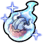

【エルロンの聖騎士】リュッカの性能
【エルロンの聖騎士】リュッカ  | ||
|---|---|---|
| レアリティ | SSR | |
| レベル | 100 | |
| 属性 | 風 | |
| 攻撃 | 物理 | |
| 武器 | 斬 | |
| 隊列 | 前列 (射程：240) | |
| 役割 | アタック | |
| 行動速度 | やや早い | |
| サポート | 物理クリティカル90UP / 物理攻撃200UP | |
| サポートボーナス | 風属性攻撃+ / 防御+ | |
| HP | 治癒 | HP回復 |
| 21867 | 277 | 359 |
| 物理攻撃 | 物理クリ | MP回復 |
| 3126 | 38.85% | 237 |
| 魔法攻撃 | 魔法クリ | HP吸収 |
| 862 | 15.75% | 0 |
| 物理防御 | 魔法防御 | MPチャージ |
| 564 | 372 | 76 |
| 命中 | ブロック | MP消費減少 |
| 213 | 335 | 14 |
行動タイムライン
行動速度:
ｽｷﾙ2 ｽｷﾙ1 攻撃
LOOP 攻撃 攻撃 ｽｷﾙ1 攻撃 攻撃 攻撃 ｽｷﾙ2 ｽｷﾙ1 攻撃 攻撃
補足
硬直時間は完璧でないので参考程度に。
このタイムラインでは行動速度は常に一定で、スキルに行動速度UP効果があったとしても反映していません
MP増加イメージ
経過
内訳
0%
25%
50%
75%
100%
補足
この表は「MPが100%に到達するタイミング」を示していますが、実際のオート操作では 直前にスキルや通常攻撃をした場合、その硬直が解けるまで奥義を撃ってくれません。
（例：1.8秒にスキル使用 → 2秒でMP満タン → しかし硬直中のため奥義発動は遅延）
手動操作で奥義ボタンを連打すれば、この硬直をキャンセルして即発動が可能です。
※キャラクターによって異なるが1秒ほどで硬直が解けます。
奥義
 レオンズ・テイルウインド レオンズ・テイルウインド | |
|---|---|
| Lv.5 | 一番近い敵1人に物理ダメージ1800%+1800、6秒間の解消、8秒間の風属性の敵からの被ダメージ20%UP、10秒間の物理防御35%DOWN。 |
| Lv.4 | 一番近い敵1人に物理ダメージ1740%+1700、6秒間の解消、8秒間の風属性の敵からの被ダメージ18%UP、10秒間の物理防御32%DOWN。 |
| Lv.3 | 一番近い敵1人に物理ダメージ1620%+1550、5秒間の解消、8秒間の風属性の敵からの被ダメージ16%UP、10秒間の物理防御29%DOWN。 |
| Lv.2 | 一番近い敵1人に物理ダメージ1440%+1400、5秒間の解消、8秒間の風属性の敵からの被ダメージ13%UP、10秒間の物理防御25%DOWN。 |
| Lv.1 | 一番近い敵1人に物理ダメージ1200%+1200、4秒間の解消、8秒間の風属性の敵からの被ダメージ10%UP、10秒間の物理防御20%DOWN。 |
スキル
 通常攻撃 通常攻撃 |
|---|
| 【硬直時間】1.58s 【硬直時間(クリティカル)】1.58s |
 スマッシュ＆スラッシュ スマッシュ＆スラッシュ |
【硬直時間】2.91s 一番近い敵1人に物理ダメージ350%+2500、2秒間の眩暈、6秒間の物理防御25%-460DOWN。 |
 ぜんぶわたしの力になるっ！ ぜんぶわたしの力になるっ！ |
【硬直時間】2.20s 自身に10秒間の物理クリティカル+37.5%、10秒間の物理攻撃18%+735UP、味方全体に20秒間の回数付物理ダメージUP(45%+1300、3回)。 |
補足
パッシブ等の行動速度UPを考慮していない行動速度0%のときの硬直時間です。
パッシブ
奥義レベル3で開放
 パッシブ1 パッシブ1 |
|---|
| 自身のスキルダメージ20%UP、スキル発動で自身に3%の風属性攻撃UP(最大15%まで重複可能) |
奥義レベル5で開放
| パッシブ2 |
|---|
| 自身の奥義ダメージ10%UP、奥義発動で自身に10%のデバフ耐性UP(最大40%まで重複可能) |
絆ボーナス
| 物理攻撃 | ||||
|---|---|---|---|---|
40 | 40 | 120 | 120 | 200 |
200 | 280 | 280 | 360 | 360 |
| MP消費減少 | ||||
0 | 3 | 3 | 5 | 5 |
6 | 6 | 7 | 7 | 8 |
備考
| イラスト | ねぶそく |
|---|---|
| ボイス | 天知遥 |
| 役割 | アタック |
| スキル | 強化、弱体化、妨害 |
| 身長 | 156cm |
| 体型 | B94(H)/W66/H84 |
| 実装日 | 2024/12/05 |
| 入手方法 | バーストフェス期間限定召喚 |
| 主な限界素材 |    |
※各項目は聖騎士Lv、スキル、アビリティ、奥義、絆、覚醒、を最大育成し、パッシブ効果を加えた能力値です。